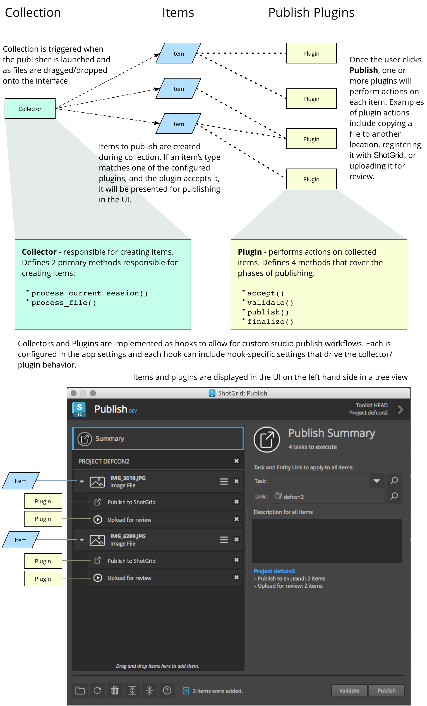

ShotGrid Publisher API reference, v2.7.1
Overview
The Publish app is a highly customizable workflow tool that allows studios to track the data being created by artists and control how it is shared. The app can be modified for studio-specific needs by way of hooks that control how items are identified for presentation to artists for publishing and how those items are then processed. In addition to customizing the publish UI behavior, the underlying Python API that drives the interface is also available for more advanced studio customization.
Publish Execution
The publisher has several phases of execution that developers should be aware of before implementing custom behaviors.
The graphic and descriptions below outline these concepts for developers just getting started with the publisher. The links on the left can be used to examine each of these concepts and the APIs that drive the publisher in detail.

Collection & Acceptance
When the Publisher is launched, the current session (Maya, Nuke, Houdini, etc) is processed and publish items are collected for display in the Publish app’s interface. These items represent what the artists may want to track in ShotGrid and/or share with other artists by way of publishing. Similarly, as files are dragged and dropped onto the publish UI, they are processed and collected as publish items. This item collection behavior is defined by the app’s collector hook and can be taken over or modified by studios to customize what data should be tracked in ShotGrid and how it should be shared between artists.
Note
For a deeper dive into the collection behavior and how it can be customized, see the Collector Hook docs.
Before the collected items are shown in the Publisher UI, they will automatically be processed for acceptance. Publish plugins are configured for the Publisher that define how items are processed when a publish is triggered. During the acceptance phase, each configured plugin will have a chance to accept each collected item.
This acceptance phase has two parts. The first part handles comparing the collected item’s type specification to a list of filters provided by the publish plugin. If the item’s type specification matches one of the plugin’s filters, then the second part of acceptance is triggered. This part allows the configured plugin to further inspect the item to indicate if it can and will operate on the item.
For each plugin that is accepted, a publish task is shown in the UI. These publish tasks represent the processing that will happen once a publish is triggered.
Note
For a deeper dive into the publish plugin behavior and how it can be customized, see the Publish Plugin docs.
Item Review
Once the acceptance phase is complete, the user can review the items, make changes to the target context of each, provide publish descriptions, take screen grabs, and update settings. Additional files can also be dragged and dropped or browsed to for collection.
Publishing
After the artist has taken the time to review the collected items, they can perform one of two actions;
They can run a validation pass on the items. This will trigger a validation pass for each task in the list in the order in which they are displayed.
The user can also decide to run the full publish pass. This will include all the validation steps above followed by execution of each plugin’s publish pass followed by execution of each plugin’s finalize pass.
Note
The overview above describes the publish execution in terms of an artist launching the Publish UI. All of these concepts, including collection, acceptance, and publish plugins are exposed by the Publish API making it possible to build more advanced, custom publish workflows outside of the default Publish UI.
The following sections outline all of the hooks and APIs available to studios for publish workflow building and customization.